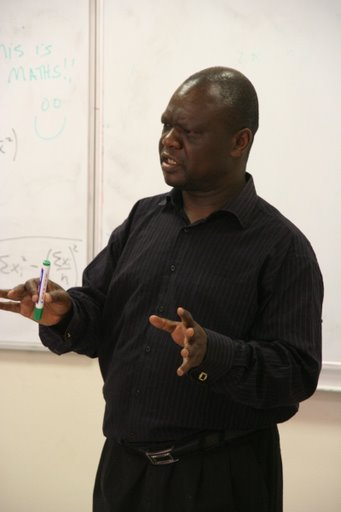
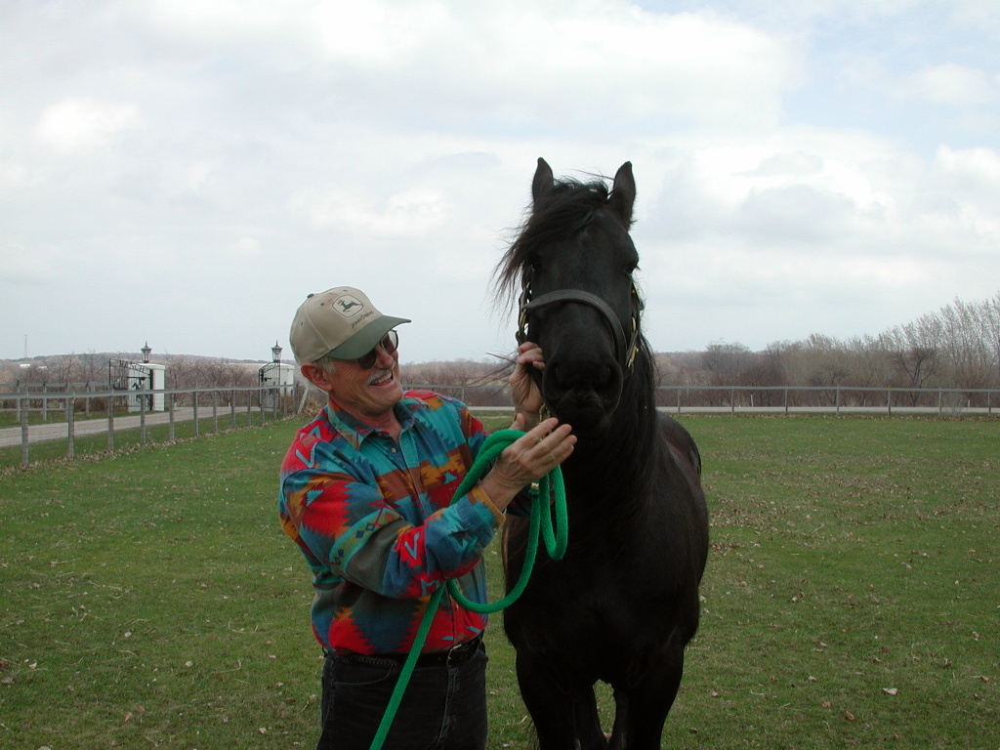
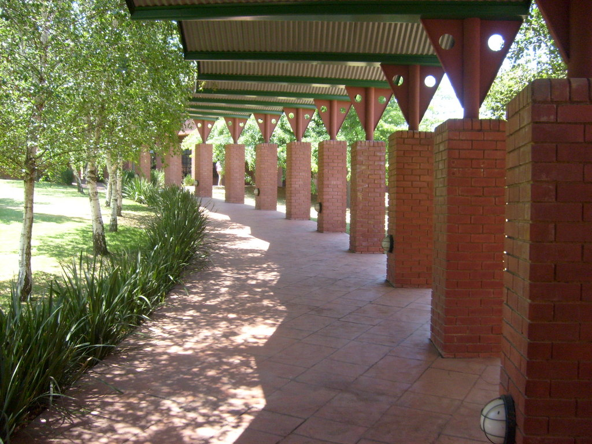

Africa!
I would send this email individually, but there are 14 computers, with unbelievably slow internet for 98 students. Also the internet doesn't work, really. I've written three complete emails only to lose them to network crashes, computer crashes, and the one time the keyboard stopped working. It's also impossible to call me, as they took away my cell phone (not that it worked anyway). So I've got a phone card and three working payphones for everyone. So basically don't expect to hear from me too often. Eventually, we will be getting laptops for everyone, and wireless internet across campus, but the wireless equipment is held up in customs. But for now, this is it.
Perhaps I'm not painting the best picture of ALA, but really the past five days (feels like three years) have been the best five days of my life. I arrived after 28 hours of traveling at 11 pm, waking up my roommate (Mainza Moono from Zambia). I woke up at 5:30, which is apparently when all African students wake up. Why they need an hour and half before breakfast, I don't know, but I'm here to learn.
Anyway, then I went to breakfast with my dorm. We're in the same building as the girls, but they are upstairs. There is certainly no intervis—entering the girls' hallways at any time ever will result in expulsion. But moving on, we went to breakfast, where we usually have a fried egg, toast, cereal and either a hot dog or dangerously undercooked bacon. Africans apparently eat their cereal with hot milk, which is a little unusual, but the tea is absolutely delicious. We would go to classes after breakfast, but we haven't had any classes yet, just orientation. Lots of silly games and exercises and boring lectures about topics ranging from health and wellness to life coaching to snakes we might find on campus. That last lecture was about snakes and was actually quite interesting—apparently there are spitting cobras, and people kept asking questions about whether black mambas can catch people on bicycles.

All of the other students are so cool. They are absolutely brilliant, and friendly and really cool. My roommate, Mainza (pronounced Mine-za) is the man. Tinashe, Spencer, Bridget, Sila, Noni, and approximately 93 others—they are all so interesting, glad to be here, and fun to be around.
Fun. That is something this school knows how to have. We had a reception for all these important donors and everything, and that wasn't too exciting although the food was good, but the concert afterward given by Vusi Mahlasela (don't trust my spelling) was just amazing. He's a South African legend, apparently, known as "The Voice" and for his performance at Mandela's inauguration. It was great—he covered Paul Simon, and I impressed Ziggy, the South African next to me by knowing all the words. Soon after that the dancing broke out. Suffice to say it was the happiest and most joyful mosh pit I have ever been in. Also, I've taught most of the school ultimate, and I've played often. They're still not that good yet, but that won't last for long.
Speaking of dancing, we had a "cultural exchange" today. Most people did a national song and/or dance, and then a little bit of info about their country. They were funny, but ours was the finishing act. We presented a typical day in America, as narrated by a gangsta, a New Yorker, a cowboy (me), and a Californian. Mine, for example, began "Well, howdy, y'all!" This of course, was in my most ridiculous western accent. I went on, "Now, after a long day wranglin' steers on the plains of Grand Rapids, I head on down to the local dance hall for a little rest and relaxation!" You get the idea. The little narrations introduced the following songs, to which we danced: Soulja Boy, Macarena, Cotton Eye Joe and Cha Cha Slide. Needless to say it was extremely well received.

Speaking of music, Africans know an amazing number of American songs and artists. They know pretty much all recent rap, the vast majority of pop, but little rock or folk. You may not believe me, but today I personally observed 20 Africans dancing and singing their hearts out to "Since U Been Gone." Normally I can hold my laughter in, but this was just too much. These Africans seem to think that I'm not your typical ignorant American and I'm eager to keep that illusion up. Speaking of ignorant Americans, I have had to endure several conversations about all the stupid questions Americans ask people from Africa. Pretty much every one of them who has been to America or knows Americans has dozens of stories. And believe you me, I hear them all. But really, my welcome here has been absolutely outstanding. ALA feels very different than anywhere else I have been. It's kind of hard to describe.
Little things are what really drive it home that I'm not back in the States. We don't have ketchup here, but tomato sauce instead. It's not really anything like ketchup. Much sweeter and more liquidy. And the warm milk thing. And the larger cans of coke. And strange South African slang. Like how the Xhosa (South African tribe) click during the word vehicle, because of the h. So basically I'm having the time of my life. Of course, my classes (world literature, African Studies with both the geography and economics expansions, and Leadership and Entrepreneurial studies) haven't started yet.
I miss you all, and I hope that you are well. Please respond and tell me how you're doing; I would love to hear.
Much love,
—fas co gris
